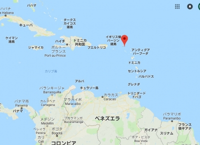
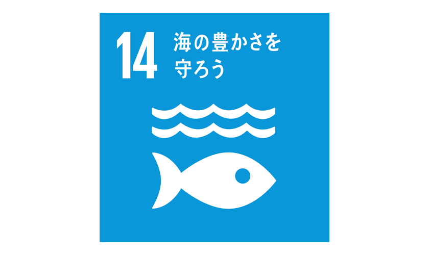
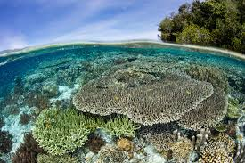

サンバルテルミー島はカリブ海に浮かぶフランス領の島です。ドミニカ共和国やプエルトリコの右側に位置していて下側にはベネズエラがあります。車なら1時間ほどで一周できるコンパクトなこの島は、豊かな緑と美しい海に恵まれ、「小さな熱帯の楽園」とも呼ばれています。1493 年にクリストファー コロンブスによって発見され、コロンブスは弟のバルトロメオにちなんでこの島を名付けました。
1 年を通して、気温は 24°Cから 31°Cに変化しますが、22°C 未満または 33°C を超えることは滅多にありません。
1年の最も暑い月は 9月で、平均最高気温は 31°C、最低気温は 27°C です。
1 年の最も寒い月は 2月で、平均最低気温は 24°C、最高気温は 28°C です。
サン バルテルミー島に地球上の他の場所では見られないイグアナの亜種が生息しています。
この島には、岩だらけの海岸から、イグアナやその他の地元の野生動物が生息する緑豊かな亜熱帯植物に至るまで、さまざまな生態ゾーンがあります。また美しいビーチがたくさんあります。
サンバルテルミー島は観光業が主な産業なので観光客が来るように島のあらゆる自然を大切にしています。
プラスチック廃棄物の大幅な削減を目的とした、ビニール袋、食器、その他の使い捨てプラスチック製品の禁止などほかにもたくさんの政策をしてビーチなどの島全体を守っています。
サンバルテルミーはカリブ諸国連合（ACS）の準加盟国です。カリブ諸国連合は諮問、協力、協調的行動を行うために1994年7月に設立された機関。加盟国が特定した地域レベルで共通する5つの関心分野（カリブ海の保全、持続可能な観光、貿易・経済、自然災害、交通）に関して政策対話を行っています。
他の多くの観光地とは異なり、サン バルテルミー島には公共交通機関がありません。島は小さく、贅沢さと高級感が重視されているため、ほとんどの住民や観光客は自家用車やタクシーで移動します。バスや電車がないことで、よりゆったりとした生活のペースが可能になります。
グスタフ3世飛行場は短い滑走路であるだけでなく、滑走路の手前にあるビーチや道路に接触しそうな高度で海風を受けながら通過する進入路が特徴的であり、「世界で最も危険な空港」第3位に選ばれています。
島の生態系と経済においてサンゴ礁と海洋生物が果たす重要な役割を認識し、サンゴ礁と海洋生物を保護するために保護海域を設定しました。
 